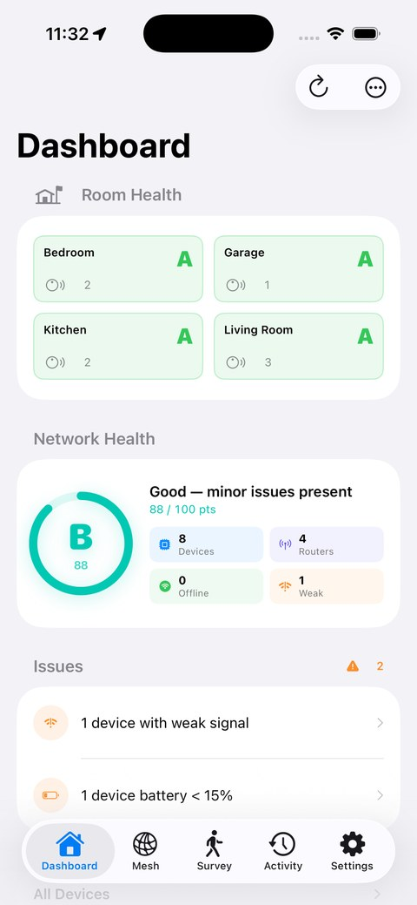
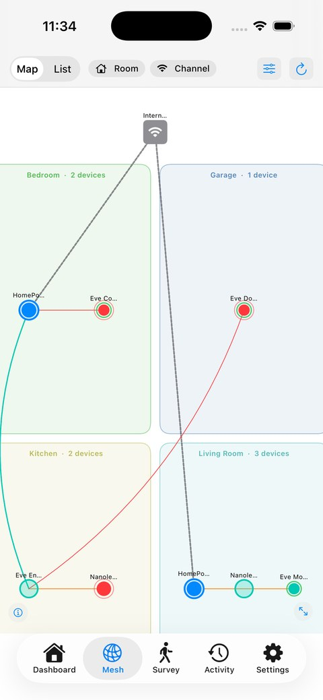
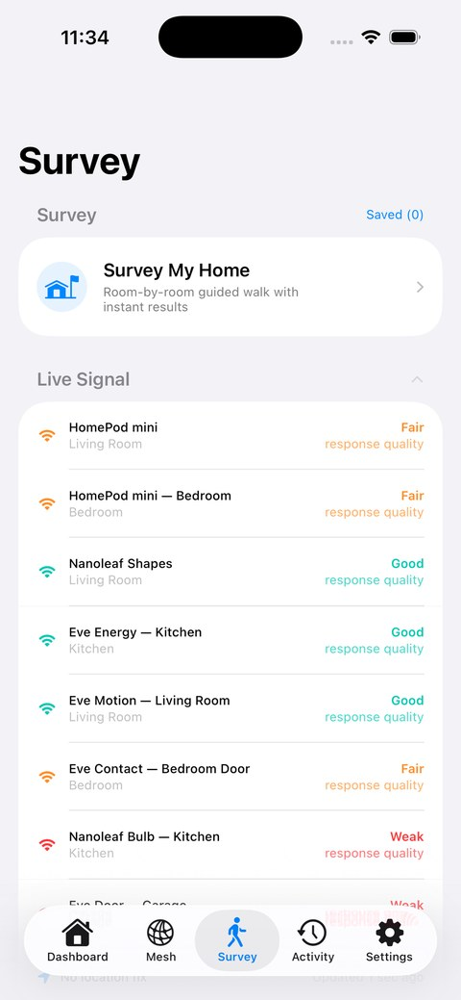
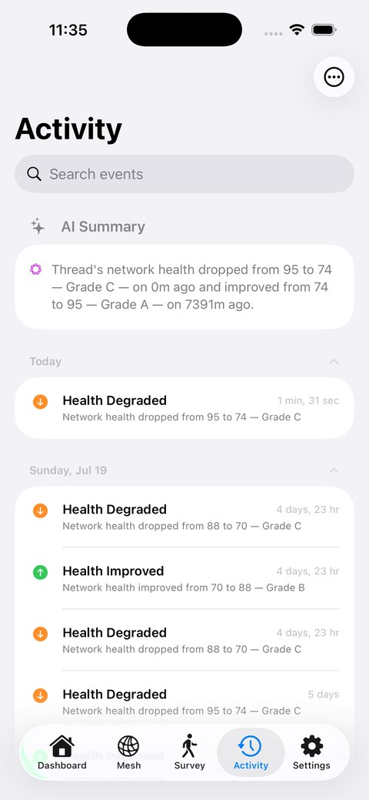

Most Thread devices are invisible. They just work — until they don't. ThreadMapper shows you every device, which rooms have weak coverage, and the moment something drops offline.
iPhone · iOS 17 or later · Apple Watch companion included




An A–F grade with a clear score, plus the specific issues pulling it down.
Every device grouped by room, showing how each one reaches your border routers.
Walk each room and get a coverage grade you can act on — drivable from your wrist.
Know the moment a device drops, with a configurable grace period and quiet hours.
30 days of signal trends, uptime and firmware changes for every accessory.
Your network grade on your wrist, plus a remote for running room surveys hands-free.
iOS doesn't expose true radio signal strength for Thread accessories. So ThreadMapper measures response quality instead — and labels it as an estimate everywhere it appears, rather than dressing it up as dBm it can't actually read.
Mesh links are shown as inferred routing unless you connect an OpenThread Border Router, in which case real routing data is used. No invented numbers.
A one-time purchase — not a subscription.
ThreadMapper reads your network through HomeKit, so you'll need a home with at least one Thread border router — a HomePod mini, Apple TV 4K or similar. AI features require iOS 26 on an Apple Intelligence-capable device. Want to look around first? Turn on Demo Mode to explore the whole app with a simulated network, no hardware needed.